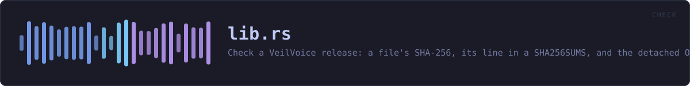

crates/veilvoice-check/src/lib.rs
veilvoice-check · 463 lines · read the source here · or on GitHub
Check a VeilVoice release: a file's SHA-256, its line in a SHA256SUMS, and the detached OpenPGP signature over that list.
Why this is a library and not only a program
veilvoice-verify did all of this and did it inside a binary crate, which has no consumers by construction. The desktop application was asked for a verify tab — drag a download onto the window and be told whether it is the published one — and there were two ways to have that:
- link
eframeinto the 1.5 MB portable verifier, which is the one binary in this project whose smallness is a feature: it is what somebody downloads before they trust anything else here; - or move the checking out of the binary, so both front ends call the same code rather than two implementations of it.
This is the second. The verifier is unchanged in what it does and prints; it just no longer owns the arithmetic.
What a pass actually proves, and what it does not
A good signature over SHA256SUMS, plus a matching hash, proves the file is the one the holder of this key published. It does not prove the file is safe, that the source compiles to it, or that the key belongs to anybody in particular. The second of those is the check worth having and it is the one this project cannot perform for you — it needs somebody other than the author to have built the same tag and got the same hash.
Every front end that uses this has to say so. The words are here, in SCOPE, rather than in whichever interface happens to be showing the answer, so a second front end cannot show a pass without them.
No network, and no GnuPG
Nothing in this crate opens a socket or runs a program. It is given bytes and it reports on them. Downloading is the caller's problem, and the two callers that do it shell out to the system's own transfer tool.
In plain words
This is the checking behind "is this download the real one".
You give it the file you downloaded, the published list of fingerprints, and the signature over that list. It checks the signature first -- because a list nobody signed proves nothing -- and only then compares your file against it.
A pass means the file is the one the person holding that key published. It does not mean the file is safe, and it does not mean the program in it matches the source code you can read. That last one is the check worth the most, and it is the one this cannot do for you: it needs somebody other than the author to have built the same thing and got the same answer.
WHAT THIS FILE CONTAINS
463 lines defining 11 functions (9 public), 2 types and 3 constants. Everything below is read out of the source, so it cannot disagree with the code.
The types it owns.
enum Errorline 94 — Something that went wrong, in words a person can act on.struct Checkedline 276 — What a full check found.
What happens when it runs. These are the ways in: public, and nothing else in this file calls them, so they are what an outside caller reaches first.
sha256_bytesline 171 — SHA-256 of bytes already in memory.
reacheshexnames_in_sumsline 237 — Every name a SHA256SUMS lists, in order.check_fileline 299 — The whole check: signature first, then the hash.
reachesdigest_from_sums,digests_match,fingerprint_of,key,sha256_file,verify_detached,hex
WHAT CALLS WHAT
The functions this file defines, and the calls between them. An edge means the callee's name appears, called, inside the caller's body — a syntactic reading, not a type-resolved one.
The same graph as Mermaid source
%%{init: {"theme":"base","themeVariables":{"background":"#1a1b26","primaryColor":"#1f2335","primaryTextColor":"#c0caf5","primaryBorderColor":"#7aa2f7","secondaryColor":"#16161e","tertiaryColor":"#16161e","lineColor":"#737aa2","textColor":"#c0caf5","mainBkg":"#1f2335","nodeBorder":"#7aa2f7","clusterBkg":"#16161e","clusterBorder":"#2f3549","fontFamily":"ui-monospace, SFMono-Regular, Consolas, monospace","fontSize":"14px"}}}%%
flowchart TD
n_fmt["Error::fmt<br/>line 110"]
n_key["key<br/>line 125"]
n_fingerprint_of["fingerprint_of<br/>line 138"]
n_sha256_file["sha256_file<br/>line 151"]
n_sha256_bytes(["sha256_bytes<br/>line 171"])
n_hex["hex<br/>line 177"]
n_digests_match["digests_match<br/>line 190"]
n_digest_from_sums["digest_from_sums<br/>line 200"]
n_names_in_sums(["names_in_sums<br/>line 237"])
n_verify_detached["verify_detached<br/>line 255"]
n_check_file(["check_file<br/>line 299"])
n_check_file --> n_digest_from_sums
n_check_file --> n_digests_match
n_check_file --> n_fingerprint_of
n_check_file --> n_key
n_check_file --> n_sha256_file
n_check_file --> n_verify_detached
n_key --> n_fingerprint_of
n_sha256_bytes --> n_hex
n_sha256_file --> n_hex
click n_fmt href "https://github.com/tilas01/veilvoice/blob/main/crates/veilvoice-check/src/lib.rs#L110" "open the source"
click n_key href "https://github.com/tilas01/veilvoice/blob/main/crates/veilvoice-check/src/lib.rs#L125" "open the source"
click n_fingerprint_of href "https://github.com/tilas01/veilvoice/blob/main/crates/veilvoice-check/src/lib.rs#L138" "open the source"
click n_sha256_file href "https://github.com/tilas01/veilvoice/blob/main/crates/veilvoice-check/src/lib.rs#L151" "open the source"
click n_sha256_bytes href "https://github.com/tilas01/veilvoice/blob/main/crates/veilvoice-check/src/lib.rs#L171" "open the source"
click n_hex href "https://github.com/tilas01/veilvoice/blob/main/crates/veilvoice-check/src/lib.rs#L177" "open the source"
click n_digests_match href "https://github.com/tilas01/veilvoice/blob/main/crates/veilvoice-check/src/lib.rs#L190" "open the source"
click n_digest_from_sums href "https://github.com/tilas01/veilvoice/blob/main/crates/veilvoice-check/src/lib.rs#L200" "open the source"
click n_names_in_sums href "https://github.com/tilas01/veilvoice/blob/main/crates/veilvoice-check/src/lib.rs#L237" "open the source"
click n_verify_detached href "https://github.com/tilas01/veilvoice/blob/main/crates/veilvoice-check/src/lib.rs#L255" "open the source"
click n_check_file href "https://github.com/tilas01/veilvoice/blob/main/crates/veilvoice-check/src/lib.rs#L299" "open the source"
classDef entry fill:#1f2335,stroke:#7aa2f7,color:#c0caf5
class n_sha256_bytes,n_names_in_sums,n_check_file entry
classDef api fill:#1f2335,stroke:#7dcfff,color:#c0caf5
class n_key,n_fingerprint_of,n_sha256_file,n_digests_match,n_digest_from_sums,n_verify_detached api
classDef helper fill:#1f2335,stroke:#bb9af7,color:#c0caf5
class n_fmt,n_hex helperThis site loads no third-party script, so it cannot run Mermaid; the diagram above is the same nodes and edges drawn by the generator instead. GitHub renders the source below directly.
ITEMS
| Item | Line | Documentation |
|---|---|---|
PUBLIC_KEY pub const | 69 | The project's signing key, in ASCII armour. |
FINGERPRINT pub const | 81 | The fingerprint, written out rather than derived. |
SCOPE pub const | 84 | What a passing check is worth, in the words a user should be shown. |
Error pub enum | 94 | Something that went wrong, in words a person can act on. |
Error::fmt fn | 110 | |
key pub fn | 125 | The embedded key, with its fingerprint checked. |
fingerprint_of pub fn | 138 | A key's fingerprint, uppercase hex, no spaces. |
sha256_file pub fn | 151 | SHA-256 of a file, read in chunks. |
sha256_bytes pub fn | 171 | SHA-256 of bytes already in memory. |
hex fn | 177 | |
digests_match pub fn | 190 | Compare two hex digests without caring about case or stray whitespace. |
digest_from_sums pub fn | 200 | Find a file's line in a sha256sum-format list. |
names_in_sums pub fn | 237 | Every name a SHA256SUMS lists, in order. |
verify_detached pub fn | 255 | Verify a detached signature over data using key. |
Checked pub struct | 276 | What a full check found. |
check_file pub fn | 299 | The whole check: signature first, then the hash. |